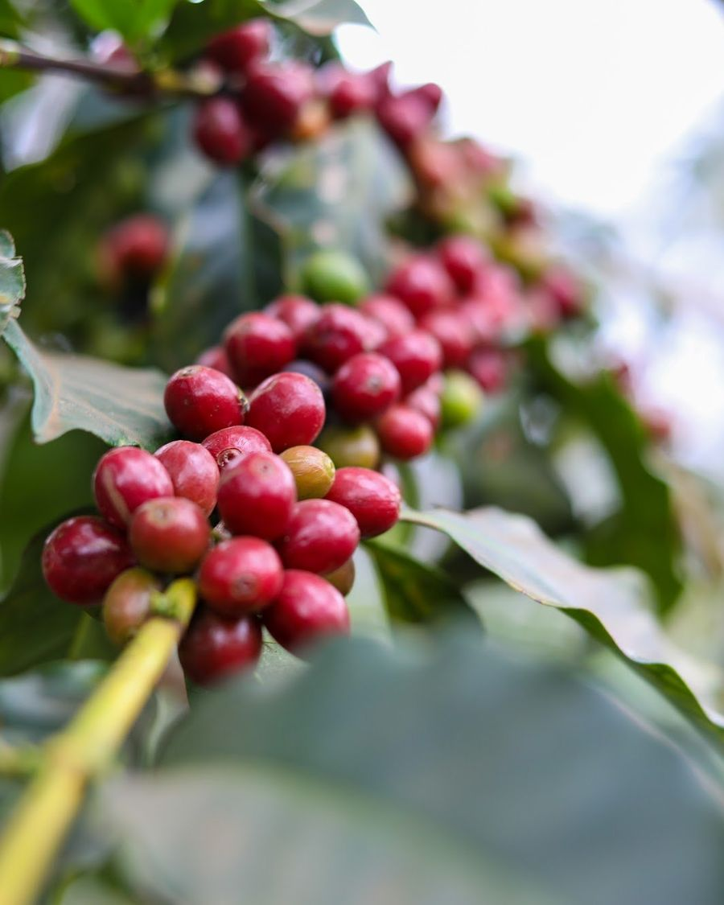
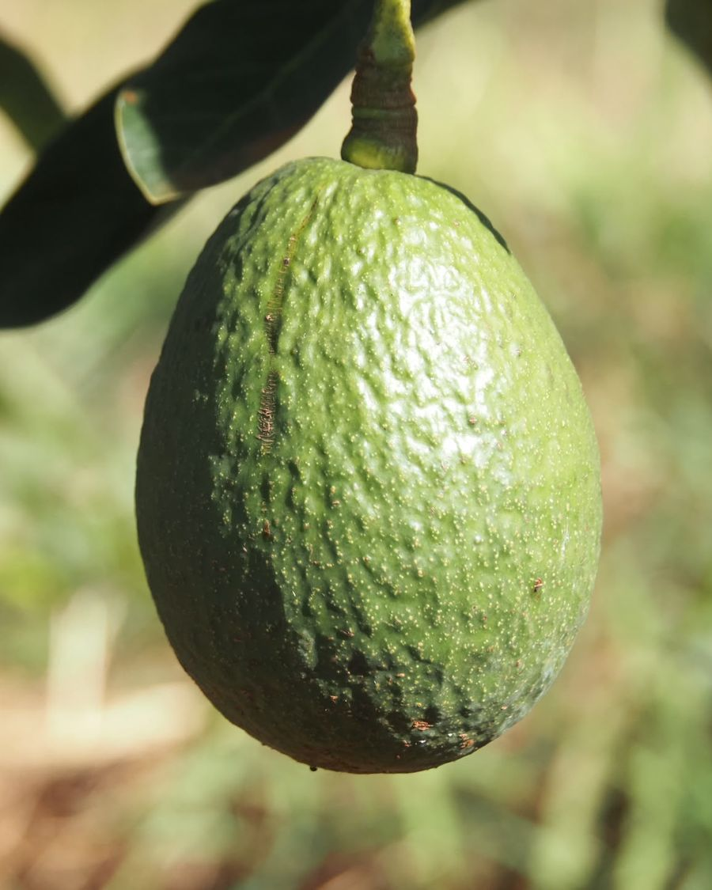
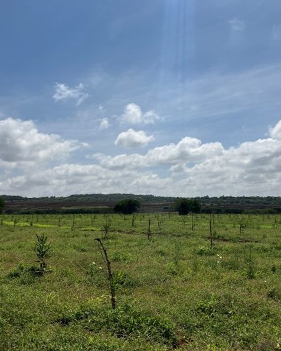
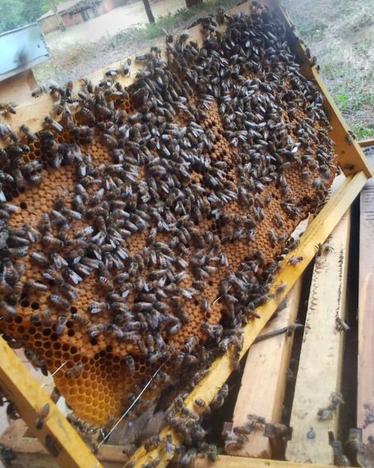
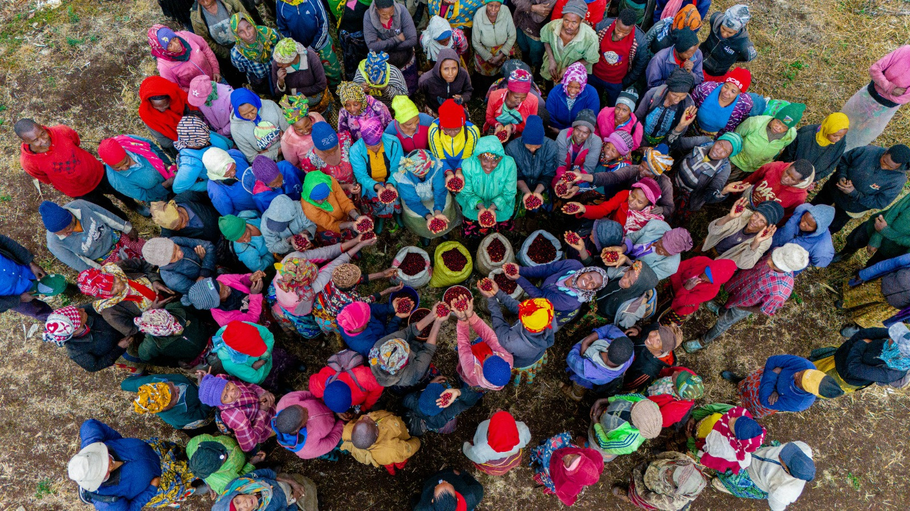

TANJA
Mission · Vision · ValuesDhamira · Dira · Maadiliミッション・ビジョン・バリュー
Wording to be confirmed.Maneno rasmi bado yanathibitishwa.正式な文言は確認中です。
Draft translationTafsiri ya rasimu翻訳は下書き
AboutKuhusu SisiTANJAについて
TANJA Corporation Ltd began managing three historic coffee estates in northern Tanzania in 2023, continuing a farming legacy of more than 100 years.TANJA Corporation Ltd ilianza kusimamia mashamba matatu ya kihistoria ya kahawa kaskazini mwa Tanzania mwaka 2023, ikiendeleza urithi wa kilimo wa zaidi ya miaka 100.TANJA Corporation Ltdは2023年、タンザニア北部にある歴史ある3つのコーヒー農園の運営を始めました。100年を超える農業の歩みを受け継いでいます。

- Began managing the estatesTulianza kusimamia mashamba運営開始
- 2023
- Years of farming legacyMiaka ya urithi wa kilimo続いてきた農業の歴史
- 100+yearsmiaka年
- Total land areaJumla ya eneo la ardhi総面積
- 1,760hectareshektaヘクタール
- People working across our estatesWatu wanaofanya kazi katika mashamba yetu農園で働く人
- 500+
-
LocationMahali所在地
Karatu District, Arusha RegionWilaya ya Karatu, Mkoa wa Arushaアルーシャ州カラトゥ県
Beside the Ngorongoro Conservation AreaKando ya Hifadhi ya Ngorongoroンゴロンゴロ保全地域のとなり
-
Our three estatesMashamba yetu matatu3つの農園
- Bergfrieden
- Shah
- Tinga Tinga
-
CommunityJamii地域とともに
We work with surrounding communities to support local livelihoods.Tunashirikiana na jamii zinazotuzunguka kusaidia riziki za wenyeji.周辺の地域と協力し、人々の暮らしと生計を支えています。
Draft translationTafsiri ya rasimu翻訳は下書き
What We DoTunachofanya事業内容
FarmShamba農園
Our farms have a history spanning more than a century and lie on the edge of Ngorongoro. Drawing on this history and rich natural surroundings, we grow coffee, avocados and macadamias, and keep bees.Mashamba yetu yana historia ya zaidi ya karne moja na yako pembezoni mwa Ngorongoro. Tukitegemea historia hii na mazingira haya tajiri ya asili, tunalima kahawa, parachichi na makadamia, na tunafuga nyuki.私たちの農園はンゴロンゴロのほとりに広がり、100年を超える歴史をもちます。受け継いだ歴史と豊かな自然を生かし、コーヒー、アボカド、マカダミアを育て、ミツバチを飼っています。
We aim to care for the environment, support the wellbeing of the people who work here, and bring joy to those who enjoy the harvests of this rich land.Tunalenga kutunza mazingira, kusaidia ustawi wa watu wanaofanya kazi hapa, na kuleta furaha kwa wale wanaofurahia mavuno ya ardhi hii tajiri.目指すのは、環境を守り、ここで働く人々のウェルビーイングを支え、この豊かな土地の実りを味わう人々に喜びを届けることです。

AvocadoParachichiアボカド

MacadamiaMakadamiaマカダミア

BeekeepingUfugaji Nyuki養蜂
SustainabilityUendelevuサステナビリティ
We believe that living in harmony with nature and growing alongside our community are essential to a sustainable farm.Tunaamini kuwa kuishi kwa kupatana na mazingira na kustawi pamoja na jamii zinazotuzunguka ni muhimu kwa shamba endelevu.自然と調和し、地域とともに歩むことが、持続可能な農園にとって大切だと考えています。
-

Carbon CreditHati za Kaboniカーボンクレジット
Improved cookstoves for households around the farm use far less firewood: less smoke, less CO₂ and less time collecting wood. The project aims to obtain carbon credits.Majiko banifu kwa kaya zinazozunguka shamba yanatumia kuni kidogo sana: moshi mdogo, hewa ukaa (CO₂) kidogo na muda mfupi wa kutafuta kuni. Mradi unalenga kupata hati za kaboni.農園の周りの家庭に広める改良型かまどは、薪がずっと少なくて済みます。煙もCO₂も減り、薪集めの時間も短くなります。カーボンクレジットの取得も目指しています。

Draft translationTafsiri ya rasimu翻訳は下書き

StaffWafanyakaziスタッフ
A diverse team of professionals committed to advancing sustainable agriculture through innovation, expertise, and quality service.Timu mbalimbali ya wataalamu waliojitolea kuendeleza kilimo endelevu kupitia ubunifu, utaalamu na huduma bora.多様な専門家が、革新、専門知識、質の高いサービスを通じて、持続可能な農業の発展に取り組んでいます。